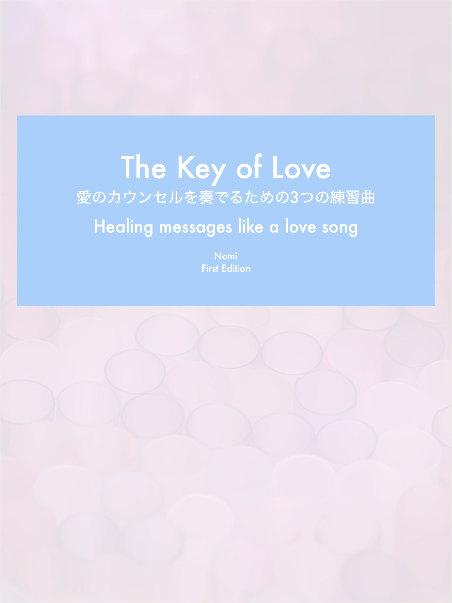

| The Key of Love 愛のカウンセルを奏でるための3つの練習曲: Healing messages like a love song | |
| NAMI | |
| (2019) | |

「傾向から改善点を探す」 過去生も今も同じ課題 take.3-2
2012 年、冬のハワイ島、
"エネルギー"は存在し、
それは確かに、触れたり感じたりできるものだと、
私は知りました。
エネルギーを読むことを学び始めると、
意図することで、
忘れていた過去や未来、遠い場所を感じられるようになりました。
ミュージック・ビデオのように流れる映像、
引き込まれ、
音楽を聴くように感情が揺さぶられる。
ビデオが終わるまでに、メッセージを読み、受け取ります。
忘れていた過去は、教訓と癒し、
未来は、希望と安心をあたえてくれます。
忘れていた過去を覗き、
悲しみや痛みに癒しをあたえることは、
とてもありがたいことですが、実は、孤独な作業でもあります。
やがて、過去に氣を向けることにストレスも感じ始めるようになり、
今この瞬間を大切に過ごしたいという氣持ちが強くなりました。
自分を癒すことを諦めたわけではありませんが、
私は、過去ではなく、"今"を生き切ることにシフトを変えました。
それは、今をともに過ごす人達からあたえられる氣持ちに、
真剣に向き合い過ごすことです。
すると、"今"には、
忘れていた過去より、さらに輝きに満ちた、
教訓と癒しが溢れていることに氣づかされます。
特に私の命題「親との確執をどうすればいいか？」
これに向き合う過程で獲得した氣づきは、
忘れていた過去も含め、
親、パートナー、友人、全ての関係、
全ての痛みを、理解と喜びへ変えるほどのものでした。
私たちは、"今"を体験するために生まれています。
自分も他人も愛し、愛される"今"を経験することが、
過去、未来、すべての自分を愛し、癒すことにつながるのです。
プレゼントのご案内
この度、初の電子書籍出版に合わせ、
プレゼントMini Book「The Key of Love」を作成しました。
是非お受け取りください。
https://form.os7.biz/f/f9a6ab98/
出生前
地球にこれから生まれゆくとき
どの親のもとで生を受けるかは、自分で選ぶ。
好ましい自分の性質に氣づき、
どれだけ自分を輝かせられるかを見るため。
嫌っている自分の性質に氣づき、
どんな自分も愛し、受け入れるため。
今世、より輝くため、親を選んでいる。
地球にいたこれまでの過去生で氣づけなかった、
自分の性質を強く教えてくれる親を。
父を嫌っていた頃、私は、恋が下手だった。
人を好きになると、人一倍の寂しさを感じた。
そのくせ、不満もよく持った。
その時、私は大切な"今"を感じながら、恋をしていた。
好きな人からの連絡を待つこと、
それも"今"ここにいるから経験できる幸せだった。
でも、
「どうしてもっと連絡をくれないの？」
素敵な時間は、すぐに不満な時間へ変わった。
私が自分の氣持ちを伝えると、
「頑張ってメールも、送ってるよ」
彼は、笑った。
でも、私には全然足りなかった。もっと伝えて欲しかった。
「どうして？」
「私のこと好きじゃないの？」
理解ができなかった。
そんな状態のとき、周りとの衝突もあった。
米農家をしている実家。
その日、よそで購入した、こだわりの自然栽培米を、
「5部付きにして食べよう」
私は精米機を借りようとしていた。
「5部付きには、どのくらいタイマーをセットすれば良い？」
両親に聞いた時、
父が面白くなさそうな顔をした。
精米は通常、父がしてくれていたが、
私は敢えて、父に精米してもらうことを避けていた。
以前に実家のお米をもらう際、
「7部付きにして食べたい」と、
何度か父に言ってみたことがあった。
しかし、決まって真っ白なお米ができあがった。
実家では白米を食べるのが当たり前、
いつも私のリクエストは無視されていた。
自分でタイマーをセットしたのは、
そういうことにになるのが嫌での行動。
「今度こそ、大丈夫」
そう思い、その場を離れた。
お米を袋詰めしようと精米機の所へ戻ると、
父が、とっくにタイマーが切れているはずの精米機の前で、
機械を見ながら、お米の出来上がりを確認している。
「何してるの⁉︎」
私は叫んだ。
その声を聞いた父は、訝しげな様子で
「お米をいい上がりにした」
と言って精米機を止めた。
「やられた！」
そう思った。
どこまでも自分の好きにならないと気が済まない父だった。
「なんでそんなことするの？！」
私は叫んだ。
「私は5部付きで食べたいって、言ったでしょ？」
「なんで勝手に白米にしようとするわけ？！」
父は、
「まだ茶色いからおいしいお米にしてあげようと思った」
と、なぜ自分が怒られなければいけないのか、私を責めてきた。
どんなに自分の意向を伝えても分かってくれない父のことが、
私は信じられなかった。
どうして私の氣持ちを尊重してくれないんだろう？
悲しくなった。
幼い頃にあった、ある出来事が思い出されて、怒りが湧いた。
酔っ払った父が、からかって、一度だけ私の胸を触ったことがあったのだ。
「どうして、私の氣持ちを尊重することが出来ないの？」
「自分がしたいようにだけして、
私の氣持ちを考えられないなんだったら、
そんなの私が小さい時にされたことと、一緒だよ！」
「いつもそう！自分だけ！」
「良いと思ってしてることだって、それはただのありがた迷惑で、
それが自分勝手な押し付けだって、なんでいつまでたっても分からないの？」
恋人との関係が上手くいっていなかった私には、
父の行動を受け入れる余裕もなく、
両親の前で泣き叫んだ。
母が、
「カウンセリングの勉強してるんでしょ？
そんなに取り乱して、
自分をカウンセリングしてもらう必要があるんじゃないの？」
私に言ってきた。
悔しかった！
お米のことがきっかけで、
不安定な私から、父への怒りが爆発して、
私は、本当に取り乱していた。
私はすぐに実家を離れ、
目に入る街の光を、ぼぉ、と見ながら車を運転した。
泣いた後で、いつもの景色が綺麗に見えた。
叫び切っていたので、怒りはもうなく、放心状態だった。
その時、ふと想いが灯った。
「もしかしたら、これは恋人に私がしていることと、同じなんじゃないか？」
「私も、彼の氣もちを考えず、自分の氣持ちだけ押し付けているのかな？」
ふと思い浮かんだことだったが、
たぶんそうだ、という確信もどこかにあった。
「私も好きな人の気持ちを、分かろうとしてなかっただけ？」
「相手には相手の氣持ちがあると、分からなかっただけ？」
私は、恋人にとった行動と、父の行動を重ねた。
自分の氣持ちだけで、思いやりがなかった。
自分の考えを優先するよう、恋人に強制していた。
彼が、自分と同じ感覚で生きていると思い込んで、
父が私にしたように、相手を苦しめた。
強制されることがどれだけ苦しいか、
それを身をもって体験するため用意されたような、
父との幼い頃の事件や、今回だった。
自分がされてあれだけ嫌だったことを、私も違う形で人にしていたのだ。
『父と私、恋人と私』その関係性が、私に氣づかせてくれた。
ずっと心に残って消えない、幼い頃からの傷。
それを紐解くことが、
愛に苦しんでいた私に氣づきをあたえそうだ。
冷静にそう感じていた自分に、
私は驚いた。
お米事件以後、
私は恋人に、自分の考えを強制しないよう努めた。
相手の行動に思いやりを持つ努力をした。
それでも、寂しさは、消えなかった。
「私はいったい何を求めているんだろう？」
「この寂しさは、どこから来るんだろう？」
「父とのことが、好きな人に感化されて出てくるのかな？」
『父と私、恋人と私』の構造が、
自分というものを少し氣づかせてくれたこともあり、
どこから来るか分からない寂しさも、
もしかしたら父と関係があるのかもしれない、
私はそう思い始めていた。
小さい頃から、
私は父に愛されている感覚を持つことができなかった。
幼い頃の事件があった。
普段に怒られた思い出はあまりないが、
褒められた思い出もない。
何が父からの愛か、分からなかった。
父は私に「ずる賢い」とよく言った。
これは、褒め言葉なんだろうか？
私の何がずるいんだろう？
父の言葉の意図がわからず、
なぜ私をずる賢いと言うか、父に聞いたことがあった。
「べつに、何も意味はないよ」
父はそう言っていた。
釈然とせず、
「父は私のことが嫌いなんだ。」
私はそう思った。物悲しさが残った。
それ以降も、
父からの愛を十分に理解することなく私は大人になった。
いつまでも恋を上手にできなかった。
結婚せずに子供を産むことになった後も、それは変わらなかった。
それでも、
父は、私の子育てには協力的だった。
私の娘と過ごすことで、笑顔を増やし、
仕事人間だった父にとって、私の娘と過ごすことが、
子どもの成長を長く間近に見る初めての時間になった。
私には、父の笑顔が新鮮だった。
私の娘を可愛がる父の姿をみて、
自分が父に可愛がられているような氣持ちになって、嬉しかった。
父に愛されている感覚、それがどういうものか、
娘に私を重ねることで、初めて感じることができた。
「なぜ父のもとへ生まれて来たのか？」
怒りから、冷静な問いへと変わっていった。
エネルギーを読むことについて学んでいた私。
ある時、生まれる前の記憶をみていた。
それは「父を選ぶ」場面だった。
『父、そして父の両親を見定めようとする私。
これから生まれていく私が、
自分と同じ性質を持つ親を選ぼうとしている。
今世、より輝くために。
それまで地球で過ごした過去生では、
自分自身のことを愛せなかった私の性質を、
強く教えてくれる父を。
嫌いな自分の性質を知り、
受け入れ、認めるために。
父のもとへ生まれることを、自ら決めている。』
あまり怒られることなく育ち、自分が一番可愛がられたいところや、
愛はあたえて貰ってから返す傾向が強いところなども含め、
父を選んでいた、私。
「え？！そういうことなんだ...」
見たことには、驚いたけど、ただ受け入れるしかなかった。
何も言い返せない。
どこまでも父のことを、苦手だと嫌っていた私だったのに、
親を、自分で選んでいた。
しかも、自分と似ている性質を、より強く持つ親を。
自分の性質に氣づき、自分を認めて、より輝くために！
父を選ぶときの場面を見て、驚いた私だが、
さらに古い過去生を生きた記憶と照らし合わせてみると、
納得ができた。
ある過去生で私は、
木こりだった父の仕打ちに苦しみ、恨んでいた。
それを見た私は、過去生で傷ついた自分を集中的に癒していただけだった。
その後、四年ほど経ち、
数回目に同じ過去生を覗いたとき、
過去生の父と私の関係に、現在の私の状況と、
それまで氣づけなかった共通点を見つけて驚いた。
過去生を父と子として生きた時には分からなかったが、
ただ蔑んでいた父の行動と、現在の私に思い当たる共通点を、
見え方は違い、強弱の差もあるが、その時、私は初めて見つけていた。
木こりの父は、不釣り合いな量の仕事を、幼い私に強制していた。
強弱の差はあれ、現在の私も、成長してきた娘にお手伝いを頼むようになっていた。
自分は父に傷つけられた被害者だと思っていた。
でも、そうではなかった。
過去生の父がしていたことは、現在の私が持つ性質に共通していた。
今になって分かった。
その過去生でも、
同じ性質を持つ親を選んで生まれていたのだから、
親へしていた蔑みは、自分へしていた蔑みと同じだった。
親と自分は違うと、自分だけ神聖化してもみえていないだけ。
親への蔑みと同じものが自分の中に眠っていた。
私は、親と自分をずっと蔑んでいた。
では、親への蔑み、自分への蔑みはどうやってやめればいいんだろう？
大切なのは、嫌うのではなくて、
善悪の判断をせず、親も自分もありのままに受け入れてみれるかどうか、
思いめぐらせてみることだと思う。
今、親になってわかる色んな感情をもとに、私は思いめぐらせた。
「親は本当は、困っていたんじゃないか？」
「親は私に助けを求めていただけじゃないか？」
「親は本当に意地悪をしようとしていたのか？」
「本当は私のことを、親なりに思っていたんじゃないか？」
「同じような言動を、違う状況でしていたり、望んでいる自分は、いないか？」
いろいろと親のことを考え、
「そういう親も、私も、しょうがない」
と、良い意味で受け入れられたらいいし、
「そういう私もいるんだな、じゃあ、変えていこう」
反省や希望も込めて調整を試みれたら、それもいい。
大切なのは、
少しだけ、新たに知る自分の姿を受け入れる柔軟さを持って、
少しだけ、映画を見るような客観性を持って、
思いを巡らせてみること。
自分と親に思いやりを持って、認めてあげること。
いつの時代も、
親とは、見たくない自分の姿を教えてくれる存在に変わりない。
親のあたえてくれるもの、
親のありがたさが分かるまで、私たちを翻弄する。
出生前を覗いて数ヶ月。
どうして父が私をずる賢いと言っていたか、
やっと思い当たった私は、
「父と姉に申し訳ないことをしていたんだ！」
氣づいて、泣いた。
末っ子の私は、母の愛情を集めるのが上手だった。
幼い自分でもそれは感じていた。
どう言えば母が喜ぶか、どうすれば怒られずすむか、
また時に、ただ側にいるだけで、母が喜ぶのが私には分かった。
母を怒らせている姉や父を見ては、
「どうしてそんなことをしたら母が怒ると、分からないんだろう？」
そう思った。
私が泣けば、姉が怒られた。
それも分かって、私は泣いた。
姉も、母からの愛情をたくさん欲しかったはずなのに、
その他のことはなんでも姉が羨ましかったけど、
母のことで、私は優越感を抱きつづけた。
もしかしたら、
父も、もっと母から愛を向けて欲しかったかもしれない。
父とさえ、私は母からの1番を、競っていたのかもしれない。
甘えたい父の性質と、私の性質が、衝突していたのかもしれない。
そんな私を、
父がずる賢いと言っても、何もおかしくはなかった。
私は２人を苦しめて、
そして、自分では何にも悪いことをしていないと思っていた。
もう、今となっては、やり直せない。
過去は、ただ自分の姿を教えてくれる。
思い知り、
そしてこれから、
違う氣持ちで築く未来を想像することが、
ただ"今"の私にできるすべてだった。
周りを見ると、親との確執を持つ人は、多いように思う。
親にとって当たり前の行動が、
ときに、子どもにとっては暴力的な態度に映り、
大きな悲しみや怒りとなって、心に残る。
本質的には親子には同じ性質が潜んでいるのに、
その行動が、
正負だったり温冷だったり強弱だったり、
表面的には全く違うように見えるし、自分のことはあまり見えないから、
「ひどい！」
子どもは、親を恨んでしまう。
私も、父との幼い頃の事件を、いつまでも許すことができなかった。
酔っ払った父がした、たった１度のことを、
どこがどう自分と似ているか氣付けるまで、30年恨んだ。
気づくきっかけは、大切な友人や恋人との喧嘩で、
私の場合は父と違い、怒りや正当性に任せた言葉で、相手の心を深く傷つけた。
父と同じ、感情に任せてとった行動だった。
疲労、ストレス、自信、エゴ、
その中で、そんなつもりもなく人を傷つけた。
私は、完璧にコントロールすることが出来ない、自分の弱さを知った。
私も、父と同じ。
強くて完璧ではない。
弱くて脆い。
自分を思い知ったとき、
私はようやく、自分と父のことを、ありのままに受け入れられた。
自分の弱さを知り、父のことも、思いやることが出来た。
親があたえてくれるもの。
ときにそれは、とても分かりにくい。
喜んで受け取れるようなものばかりではない。
不得意分野、認められない自分の姿、自分の至らなさ、
そういうものに氣づかせて貰えること。
それが、苦手と思っていた親からあたえてもらえる、
意外性に満ちた、大切な贈り物となる。
私があたえられた「弱さを認める」という贈り物。
それをやっと受け取った私は、
人にも自分にも、以前より思いやりを持つことができた。
弱さなのに、強さに繋がる、大きな氣づきだった。
親があたえてくれるものは、喜びだけではない！
悲しみと苦しみの中にも隠されている！
そして、その隠されたものに氣づくことで、
私たちは、もっと、輝きだす。
相手は鏡に映る自分
素敵だと思う人に、あなたの姿を重ねてみたとき、
共通するものを感じることで、あなたは自分の輝きを知ることができる。
苦手だと思う人に、あなたの姿を重ねてみたときは、
共通するものをそこに見いだすのは困難な作業だけど、
時に怒りを感じることで、あなたがもっと輝ける部分を知ることができる。
自分に氣づけば、自分のエネルギーが変わる。
自分の氣持ちと行動が変われば、
誰かを変えることもなく、物事は進展する。
状況は変わる。
必要なことは、自分を振り返り、自分に氣づくこと。
その行動の積み重ねの果てに、
理想だった未来を過ごしているあなたがいる。
なぜ親を選んで生まれて来たかをみて、
私はしばらく呆然としていた。
「私に、何ができるかな？」
母や私の作った食事を褒めることはせず、
自分にだけ賞賛を求める父にずっと腹が立っていたけど、
「父をほめたら、喜ぶだろうな」
私は思った。
でも、本当は悔しかった。
父の方が、私の父親で、私のことを小さい頃から
たくさん可愛がって誉めて、愛してくれる存在のはずなのに！
「誉めてもらってないのに、
どうして子どもの私が、先にそれをしないといけないの？！」
本当は癪だった。
順番としては、まず父から愛してもらいたい。
でも、私は諦めた。
父と私に共通する性質の中に、
"愛をあたえてもらってから、かえす傾向が強い"
もあったから。
やっぱり、同じ。
私から歩み寄ろう。
"負けるが勝ち"のことわざとは、こういうことなのかな？
私は、まずはあたえる、を父に実践した。
まず、父が顕著に求める「おいしい！」を連発した。
それから、こちらから話しかける。
大きい声でありがとうを言う。
言って欲しそうなことを、言ってあげる。
家族と過ごす時には、父を1番にしてあげて、自分は2番に甘んじる。
etc.
最初はちょっと照れ臭いこともあった。
父からの反応も良くない。
「うぅ！うまくいかない...」
そう思った。
でもしばらくたつと、
父からの反応に、あまりこだわらなくなってきた。
それよりも、自分のしていることが、楽しくなった。
私の方から愛してあげている優越感が、面白かった。
そして、嫌いだった父を愛してあげる（！）ことが、
なんだかギャグみたいで、面白くなってきた。
私は、よく笑うようになって、
どこからか、自信も芽生えてきた。
そして、
初めは「あれ？」という反応をしていた父が、
変わってきた。
笑って挨拶してくるようになって、
よくご飯を作ってくれるようになった。
満足そうな顔をするようになった。
会話が弾むことがあった。
ある時、ご飯を作るのが好きな父が、
おかずを買ってきて、お昼に、うどんを作ろうとしていた。
私に「食べる？」と聞いてくれた。
お米が食べたい氣分だったから、
「うーん、ご飯が食べたい」
私は、そう言った。
今までなら、それでおしまい。
「そうか」（じゃ、自分で作ってね）
という言葉が返ってくるはずだった。
ところがその時は違った。
父が、私のためだけに、お米を洗い出した。
「えぇ⁉︎まじで！」
父が、自分と違う行動をする人を受け入れ、
その用意をしてくれようとしている！
そんなことは初めてで、私は嬉しくなって、笑った。
その後も続いた。
出産を機に、自然派洗剤にこだわり始めた私は、
実家でも気に入ったものを置いて、家族に使ってもらった。
私が用意し忘れ洗剤が切れると、両親は当たり前に合成洗剤を使った。
なのに、ある日、実家に帰ると、
見知らぬ自然派洗剤が台所で使われていた。
「これ、どうしたの？」
なんとなく、聞かなくても分かった。
きっと父が用意してくれたに違いない、という嬉しい驚きを、
本当は感じていた。
なぜなら、その頃になると、父は、明らかに変わっていたから。
変なタイミングで頑固になることがなくなり、
私と娘が外で遊んでいると、
「打ちっ放しに行ってくる」と
自分も楽しく過ごすことに前向きになった。
穏やかで、打ち解けやすく、優しくなった。
その洗剤も、やはり父が買ってきてくれていた。
こちらから態度を変え始めてたったの5ヶ月。
私は父から愛されている、という手応えをひしひしと感じ始めた。
それまでの人生も、もちろん愛されてはいたんだと思う。
だけど、父なりの愛し方に氣付けなくて、私は勝手に苦しんだ。
もしかしたら父だって、
私への接し方が分からなくて、
適度な距離を取って、見守ろうとしていただけなのかも知れない。
後になってみればそう思えることも、渦中にいれば、分からない。
父も私も、愛をあたえられてからそれに応えるという傾向が強く、
親子だから親から最初に、という私の作ったルールは、
父だからといって、通用しなかった。
愛は、積極的にあたえないと、分かるようには返ってこない！
１人で悶々としていても、
手が差し伸べられるのを待っていても、ダメなんだ！
愛の投げかけは楽しくて、自信に繋がる。
自分の好みの押し付けにはならぬよう、
相手の望みを見極めることが大切なんだ。
時には待つことも、時にはただ共感することも、
それが、愛をあたえる、ということなんだ。
ちょっとの間に、
私も、
父も、すっかり変わった。
ラブソングを書けそうな氣付きがあって、
私は、父から愛されている感覚で満たされた。
父といることが楽しくなった。
恋も一緒だった。
以前の寂しさを感じることは、なくなった。
私が、好きな人に何を求めていたか？
求める方向が違っていた。
寂しさの大部分は、恋人とは関係ないところからやってきていた。
そのことが、やっと分かった。
"相手は鏡に映る自分"と念頭に入れ、日常を送っていると、
問題があるたび、自分への氣づきがあり、生活が楽になる。
私たちは、
鏡の前に立ち、服や髪型を好きに楽しむように、
自分を取り巻くエネルギーも変えることができる。
エネルギーチェックツール "相手は鏡に映る自分"
１、
鏡の前に立ち、
嫌だな、と思ってしまう自分を見たとき（衝突）、
「自分に氣づかせてくれるきっかけをありがとう」と心の中で感謝する。
衝突を、向上のきっかけにすると、心の中で宣言する。
2、
衝突が起きたとき、
鏡の相手を「自分だ」と受け入れるのは、
動揺するし、とても勇気がいる。
だから、時間をかけて自分を振り返ってみる。
相手と自分の共通点、
または相手と真逆のことをして疲れている自分を探す。
3、
少しでも自分に氣づくこと。
これが大切なエネルギーとなる。
自分に氣づき、自分を思いやることが、とても大切。
自分に出来ていないことがあったり、自分自身に氣づけていないと、
鏡の相手のことも分からず、怒りが生まれる。
自分に氣づけば、怒りが相手への理解と思いやりの氣持ちに変わる。
今まで生活の中にあふれていた怒りや恐縮が、
理解や思いやりへと変わると、
生活全体がどんどん楽しくなる。
苦手だと思っていた人もそうではなくなり、
嫌な人に会う機会も自然と減っていく。
それは、
自分のエネルギーが前より輝いている、
と認識することができる。
相手は鏡に映る自分
"素敵だと思う人に、あなたの姿を重ねてみたとき、
共通するものを感じることで、あなたは自分の輝きを知ることができる。
苦手だと思う人に、あなたの姿を重ねてみたときは、
共通するものをそこに見いだすのは困難な作業だけど、
時に怒りを感じることで、あなたがもっと輝ける部分を知ることができる。"
苦手な人は、
あなたが自分のことに氣づけていない部分を、刺激する。
あなたが、どんな自分に氣づいていないか、
どれだけ自分に氣づけていないか、
それに腹を立てているかのように、怒りの感情が湧く。
あなたが
自分より行動が遅くて、同じ仕事が出来なくて、
配慮も出来ない人にイライラしているとする。
あなたは、その人よりパキパキと動いて、氣配りもしている。
物事をスムーズに運ぶ努力もしている。
「なぜ、あの人はそれをしようとしない？
しないことが当たり前みたいな態度なんだろう？」
相手に募らせるイライラ。
そのとき、"相手は鏡に映る自分"を思い出し、
外に向く感情を、自分自身に向けてみる。
冷静になって、自分に思いを巡らせてみる。
すると、氣づくかもしれない。
立場が上だったり、尊敬している人の前では、
あなたが自分のことをダメだ、と思っているかもしれないことに。
あなたは、もっと出来る人になろうと、出来ない自分を責めているかもしれない。
それとも、自分で確立した常識の前で、
がんじがらめになって苦しんでいるかもしれない。
教えられたり、周りの人たちから読み取ったり、
私たちは、あるべき姿を、日々自分に言い聞かせ生きている。
あるべき姿に近づこうと努力するあなたが、
そうしないようにみえる人を攻撃する。
その攻撃はどこへ向かうのか？
頑張っていない人＝頑張っていないあなた
と考えると、
そこに
自分に厳しすぎる、自分自身を責めているあなたが見つかる。
出来ない人＝出来ないあなた
に怒りが触発されているのかもしれない。
あなたには、何が出来ていないんだろう？
あなたは、どんな自分になりたいんだろう？
思い描く理想の姿になろうとしているあなた。
もっと出来ていない人を攻撃をしているようで、
理想の姿になりたいと頑張るあなたは、
努力も当たり前にできるあなたは、
相手＝全然出来ていない自分、を見て、
相手＝自分、を責めてしまっているのかもしれない。
こんな自分じゃあ駄目、と自分に腹を立てているのかもしれない。
頑張っている自分に協力して貰えず、
氣持ちの共有も出来ない。
今まで築いてきたあなたなりの常識を、
あなただけ貫くのがしんどくなっているのかもしれない。
もしかしたら、
あなたなりの常識から外れた人がどこか羨ましくて、
報われなさ、嫉妬に近い感情が、怒りとして湧いているかもしれない。
自分に高いものを求め、理想の型に自分を押し込め、
なんとかそうなろうと、もがいているかもしれない。
なんでも、本来持っている性質はそのままでいいし、
自分に厳しいことも、理想の自分になろうとすることも、
そのままでいいことのはずなのに、
自分の本当の氣持ちに氣づけていないと、そのことで怒りが湧いてくる。
衝突や怒りは、自分を振り返るきっかけ。
あなたが、自身で確立した常識のため、努力を当たり前に出来る人だから。
あなたが、自分を犠牲にして、まわりの人や常識を配慮する優しい人だから。
あなたは、自分がどれだけ努力し頑張ってきたか、
本当はなりたいそのままのあなたの姿に、
まだ氣づいていないのかもしれない。
今までの自分を否定する必要もないし、
鏡の相手を変えようとする必要もない。
ただ、自分のことをいたわる氣持ちを持つだけでいい。
人に向けていた怒りを、
そのまま全部自分への思いやりに変えて、
自分がどれだけ頑張っていたか、
どれだけ理想を掲げて頑張っていたか、
どういう姿があなたの本当の姿なのかに氣づけたら、
あなたは、もう今までとは違う。
あなたのエネルギーが、変わる瞬間。
ただ氣づくだけで、氣持ちと行動は変わる。
ここから始まるあなたの行動が、
どんなものであろうと、
例えばそれが、以前のあなたにとっては、
"ふさわしくない"ものであったり、
違う方向へのシフトであっても、
あなたが自分への思いやりを持って始めた行動には、
自分を含め、今後、まわりにいる全ての人への貢献に繋がる力がある。
怒りは、
あなたから、あなたへ送る、本当の自分に氣づいて欲しい時のサイン。
あなたが、どんな自分に氣づいていないか、
意識を向ければ、きっと見えてくる。
誰かに攻撃を向ける必要はない。
ただ、あなたが自分への思いやりで満たされてさえいればいい。
人生には、
思い出すと怒りや悲しみしか湧いてこないようなこと、
どう対処すれば良いか分からないこと、
いろいろと形を変えて続く不調和など、
起きて欲しくないことが、何度も目の前に現れる。
いろいろな意味でカルマという言葉は使われるが、
私は、起きて欲しくないこととして連続する出来事に、
カルマというものが"自分自身の課題"として隠されているように思う。
それは、テストに出る苦手な問題のようなもの、と捉えることができる。
どんなテストでも、良い点数を取るためには、
決まって同じような答案をして間違う問題には、傾向と対策を練る必要がある。
私たちの人生にも、テストが用意され、
起きて欲しくない出来事としてテストは突然やって来る。
その時にも、自分自身の課題に氣づいて、
対策を取れれば、テストの点数はだんだん伸びていく。
人生もまるで、受験勉強のよう。
課題対策の過程で解答方法が身につき、
テストで良い点が取れるようになってくると、
実施されているのかもしれないテストがあっても、
苦手だった問題を、そうと感じることなく過ごせるようになってくる。
そうなった時が、合格！
カルマとの別れのとき。
問題に対処できる、素晴らしい人生の始まりだ。
「生まれて来たくなかった！」
私は、泣いていた。
恋人とうまくいかないと、
悲しみと一緒に、
父への怒りが込み上げた。
抑え切れなくて私は母に電話をかけた。
「パパが私の体を触ったから、だからうまくいかない！
もうどうしたらいいか、わからない！」
母は困っていた。
小学生の時、酔っ払った父が一度だけ胸を触った。
「やめて！」
泣いて逃げた私を、
隣の部屋にいた姉が、どうしたのかという顔で見ていた。
母は、酔っ払った父に呆れ自分の部屋で休んでいた。
私は、母のところへ行きたかった。
父を叱って欲しいと思った。
でも、出来なかった。
「このことを母に言ったら、母が傷つくかもしれない。」
「このことを誰かに言ったら、父が傷つくかもしれない。」
「父を可愛がっている、おじいちゃんやおばあちゃんはどう思うかな？」
自分が言い出す勇気がないのと、父の名誉とか、
私は子供なのに色んなことを考えた。
周りの人のことばかり考えて、動けずにいる私がいた。
動揺したまま、私は、自分の気持ちを押し殺して眠った。
その後も、その時のことをずっと誰にも言えなかった。
そして、父に対する不信感と怒りだけが増した。
社会人になって、
「いつまでも誰かを恨んでいても幸せになれないかもしれない。」
私は勇気を出して、その時のことを両親に話した。
話を聞いた父は、「覚えていない」と言いながら、謝ってくれた。
私は、緊張して興奮していたけど、
父に謝ってもらっても、長年の怒りはまだ収まらなかったけど、
とりあえず伝えていなかったことは伝えたし、前へ進んでいけると思った。
でも、父を嫌う長年の感情は、なかなか消えなかった。
恋につまづくと、
どうしてあんなことがあったのか、
たったあれだけのことが、悲しみと一緒に湧く怒りとなって、
抑えきれなくて、私はいつまでも泣いた。
色んなことから逃げるように、私は日本を離れた。
行き先はどこでもよかった。
姉が「ここ、いいね」と言ったハワイ島を選んだ。
行くと、多くの人が「ここは、エネルギーが高い」と言っていた。
エネルギーが何かは、私にはそのときよく分からなかったけど、
でも確かに、何かが違うと思うことは多かった。
食べたいものの話をしていると翌日にはそれが出てきたり、
道に迷えばすぐに助けが差し向けられたり、
思ったことが具現化するスピードが早かった。
まだ行って間もない頃、不思議なことが起こった。
海に落ちるピンク色の夕日を、たくさんの人が話したり、ハグをしたり、
楽しそうに眺めていた。
私は沈んだ気持ちで夕日を見ながら、
「幸せになりたい」と思った。
するとどこかから
「あなたが皆を幸せにする」
頭の中に、声が聞こえてきた。
「えっ？」
私は、びっくりした。
「どうやって！そんなわけないでしょ？自分が幸せになる方法もわからないのに」
最初はびっくりしたその声だったが、
聞いた私の心は、親しい友人から助言を聞いた時のように、温まった。
「ありがとう」
私は心の中で答えた。
返事はなかったけど、相手が笑っているような、そんな氣がした。
ハワイ島にはたくさんの野生イルカがいて、そこにいる人はみんな幸せそうだった。
生まれて初めて瞑想というものを体験して、イルカ好きの人が集まる瞑想会にも参加した。
ハワイ島に流れる雰囲気は、ゆっくりと優しかった。
私は、そんなハワイ島で、また恋をした。
相手は、日本に長く住んだことのある、島に暮らし始めたばかりの人だった。
出逢って、楽しい時間があって、急速に距離が縮まった。
だけど、「どうしてこうなるんだろう？」
私はすぐに思いやりがある態度がとれなくなくなって、
相手に不満を抱くようになった。
当然、彼も同じように「何か違う」と感じていたと思う。
でも、お互いそんな状態だったのに、知り合って、たった2ヶ月で、
私の妊娠がわかった。
輝く命に、私は、ときめいた。
「うまくいかないと思ったけど、優しい人だし、この人の子を産みたい。」
私は、そう思った。
でも、彼の表情は歪んでいた。
「どうしよう⁉︎
ハワイ島に来たばかりで、急に2人増える家族を養っていく自信はないよ。」
私達はそれからたくさん話し合ったけど、産むか、産まないか答えは出せなかった。
彼が「日本でヒーラーをしている知り合いのMさんに、スカイプで相談しよう」
そう言った。
初めて話すヒーラーという存在のMさんは、
私たちに産む場合、
そして産まない場合に起きうる未来のことを、
「私のお腹の中まで見れるのかな？」
と思うほど、パキパキ明確に話してくれた。
そして個別に、
私がどうしてハワイ島に来たか、
ある前世との関連、
それから今後お腹に宿った命にどのように対処すればいいか、
を教えてくれた。
私にとって、
ヒーラーから話を聞くというのは初めてのことだし、
ハワイ島に来た理由とか、前世との関連とか、
その時、100%納得出来てはいなかったと思う。
「そうなの!?」
「なんで分かるの？」
「そうなんだろうな」
が混じり合った、不思議な氣持ちだった。
だけど、赤ちゃんを産みたいという氣持ちは、その時、さらに強くなった。
赤ちゃんに対する、お互いの氣持ちを合わせることはできなかった。
彼は、Mさんに相談した後も、変わらず苦しんでいた。
そんな彼の側にいることは、つわりもあり、とてもしんどかった。
彼は、それでも出国期限がきた私に、
「安定期に入ったらまたハワイ島に来てね」
どうしょうもなく切なくなる顔で、そう言い、見送ってくれた。
日本に帰ってきた私は、
なにか突き動かされるような思いで、
ハワイ島にいる私にアドバイスを送ってくれたMさんに会いにいった。
彼女は実際に会うと、輝くように美しい人だった。
私は改めてハワイ島でのお礼を言い、少し話をして、
「私もMさんみたいにエネルギーを受け取れるようになりたいです」
彼女に、そうお願いをしていた。
「すぐ出来るようになりますよ。」
真剣な私に、Mさんは、軽やかに言った。
私はこの出会いがきっかけで、
エネルギーを感じるとはどういうことか、徐々に学んでいった。
ハワイ島にいる彼とはFacebookやSkypeで連絡を取り合っていたが、
ある時、急に彼が連絡先から姿を消した。
私はびっくりして、どうしたらいいか分からなかった。
「物理的にこんなに遠くて、インターネットで連絡が取れないんじゃ、
もうどうしようもない。」
そう思った。
彼がしていることに対しての怒りは、なかった。
彼の氣持ちを理解することも出来た。
「でも、いったい、こういう時はどうしたらいいんだろう？」
私は、机にひれ伏して目を閉じた。
やっぱり悲しみが湧き上がってきて、そしてこんな時に、
父に胸を触られた時のシーンが思い出されてきて、どうしようもなかった。
「たすけて!」小さい頃の私が、叫んでいた。
私は声に出して、同じ言葉を言ってみた。
「たすけて」
そうか、小さい頃の私は、助けて欲しかったんだな...。
改めて、その時の自分の氣持ちを知った思いだった。
そして、はっとした。
「たすけて」は、今の私の氣持ちじゃないのかな？
昔と同じように、本当は今も誰かに助けを求めているんじゃないのかな？
そうだ、また同じことを繰り返してはいけない。
今度こそ、行動しないと！
私は慌てて立ち上がって、
ハワイ島にいる共通の知り合いと、彼のお母さんに連絡をした。
「勝手にこんなことして彼は怒らないかな？」
「彼のお母さんは私のことを出過ぎていると思わないかな？」
始終「どう思われるか」という思いが付きまとい、とても氣を使った。
あったことをあったままに誰かに伝えることが、私にはとても怖かった。
そんなことをしている自分に氣も引けた。
でも、「たすけて」と叫んでいた幼い頃の私のため、お腹に宿る小さな命のため、
それからいつかこのことを後悔するかもしれない彼のため、私は勇気を振り絞った。
彼のお母さんも共通の知り合いの方も、私の話に真剣に耳を傾けてくれた。
「たすけて」と言うタイミングをこの時は逃すことなく、行動に移せた私。
彼とはすぐに連絡がつき、
お互い氣まずかったけど、また話が出来るようになった。
後になって、彼はこの時のことを、何年も私に謝った。
私たちは、結婚することはなく、
離れていても良い「父親と母親」になることを決め、
別々の人生を送ることにした。
彼は、私に愛する娘とエネルギーに触れるきっかけ、
私に自分の氣持ちを伝えるたくさんの機会を、あたえてくれた。
徐々に赤ちゃんを自分の子として受け入れた彼にとって、
娘は、今では世界で一番大切な存在になっている。
日本で出産した私の子育ては順調だった。
娘が送ってくれる笑顔と愛が、私の心を満たしてくれた。
ハワイ島で出会ったMさんに、エネルギーのことを学ぶことも、
私にとっての楽しみだった。
ある時、
東京で開催された、ヒーリングエネルギーの講習会に参加してみた私は、
そこで過去生を何度も一緒に生きたことがある、縁深い人と再開した。
そして、今生のものじゃない出来事や氣もちについてお互い話す、
という、初めての経験をした。
知っているヒーラーが、Mさんだけだった私にとって、
講習会でヒーラーとして活躍されているたくさんの人と出会い、
ともに過ごすことは、新鮮だった。
講習会は、地方で過ごしていた私にとって久し振りの東京だったので、
私は日程の最後に、学生時代の友人と食事をすることにした。
彼女とは大学卒業後もたまに食事をしていたけど、
赤ちゃんの時の娘を見せて以来、しばらく振りの再会になっていた。
事前に食事場所を決めるのに、彼女が私に
「どんなお店がいい？何が食べたい？」
と聞いてくれた。
私は東京から離れて長いし、お店に詳しいだろう彼女に、
「お任せします」と答えた。
私は、彼女とはなんでも話さなくても分かり合えると思っていた。
一緒にいればそれで楽しかった。
彼女のセンスの良さを知っていたし、彼女とは食事の好みも似ていた。
「お洒落なお店を予約してくれるに違いない」
私は思っていた。
それで、何も伝えず「彼女となら全部上手く行くだろう」と任せしてしまった。
彼女が、お店を探し予約をしてくれ、待ち合わせの場所も決めてくれた。
彼女から「このお店予約したよ」のメールが届いたとき、
でも、私はそのお店にあまり心躍らなかった。
だったらすぐにそう言えばいいのに、その時の私にはそれが出来なかった。
お任せします、と選んでもらったお店だし、今更、変えてとは言えない。
「行けば素敵なお店かもしれない。」
そう思おうとした。
待ち合わせ場所に向かう電車に乗る当日になって、
「ご飯のお店予約してもらったけど、やっぱり、○○こんな喫茶店も行ってみたいなぁ」
タイミングも内容もおかしすぎるけど、私は、彼女にメールをした。
あがき、のような行動になってしまった。
待ち合わせ場所で待っていると、
「その喫茶店で会おう」
彼女から電話がかかった。
久し振りに再会した私達は、お茶を楽しんで、
私は、予約をキャンセルさせてしまったことを、謝った。
それからその店を出て、食事が出来るところを探した。
すぐそばに感じのいいお店があったから、「ここいいな」と私は言った。
彼女も「ここ、いいね」と言った。
「イタリア料理が食べたい気分」と少し前に私が言ったのを聞いた彼女が、
お店を探して電話をかけてくれている所だった。
何から何までしてくれて、申し訳なかった。
なにかが上手くいっていない感じもずっとした。
目の前には感じのいいお店がある。
私は電話中の彼女に「ここでいいよ」と何度か言った。
彼女は、私の氣分を尊重して、電話予約を完了してくれていた。
お店に着くと、彼女は明らかにいつもと違った。
移動の途中から少し感じていたけど、
ピリピリして、
「なみ変わったね。そんなので友達いる？周りはホント、大変だと思うよ」
私の言動を責めた。
怒る彼女の顔が、怖かった。
彼女を怒らせてしまった自分の勝手さが分かっていた私は、
ただ謝まった。
重い雰囲気で終わった、久しぶりの再会。
東京を離れても、悶々とした氣分は収まらなかった。
Mさんと話す機会があったので、このことを話した。
そして私とMさんは、この出来事に関連する過去を見に行った。
『明るい緑の庭、私は、子供たちに何かを教えていた。
気持ちのいい場所、子供達に囲まれ、信頼できる友人もいて、充実した時間だった。
でも私の教えている内容が、気に入らない人達がいた。
ある時、友人が自分の子を人質に取られ、私や子供達を陥れる作戦に加担した。
友人を信頼していた私は、彼女の嘘の助言を実行して、
それが原因で子どもたちがバタバタと倒れ、死んでしまった。
私も、ショックで、すぐ後を追って命を絶っていた。』
その場面をみながら、しばらく嗚咽を止めることが出来なかった。
悲しみ、悔しさ、まだ癒されていない感情でいっぱいになった。
Mさんの誘導で、私は過去生の私と子どもたちにたくさん癒しをあたえた。
それでも涙が止まらず、悔しかった。
「友人に、何か伝えることはしましたか？」Mさんが私に話しかけた。
「伝えたってしょうがない！彼女だって子供が人質に取られていたんだから！」
私は苦しくて叫んだ。
「彼女の状況を思うことと、自分の氣持ちを伝えることは、別です。」
Mさんが私に言った。
私は、過去生のその友人に、しばらく、何と言っていいかが分からなかった。
「あなたは、
そんなことをして、
自分の子供さえ無事だったら、
幸せに過ごしていけるんですか？」
これが、最初に出てきた私の言葉だった。
少しづつ氣持ちが言葉になってきた。
「どうして私に、子供を人質に取られていると教えてくれなかったの？」
「どうして組織に抵抗することより、私を裏切ることを選んだの？」
「私がどれだけ悲しむか、分からなかったの？」
私とMさんは、みた状況の全てに癒しをあたえ、今へ戻った。
過去には癒しをあたえられても、過去を変えることは出来ない。
過去には、今が変わるためのヒントがあり、
私たちには、前へ進むための、今と未来があたえられている。
私は友人に連絡をしてみることにした。
彼女と、過去生の友人との関連はないけれど、
きちんと自分の氣持ちを友人に伝えなかった、という点は、同じだった。
ただ謝るだけじゃなく、私は自分の氣持ちを色々話してみることにした。
彼女にレストランで言われたことをどう思ったか、
彼女のことをどう思ったか、いきさつも、色々。
後になって、ようやくまとまってきた自分の氣持ちを伝えた。
私は、自分の氣持ちに気づくことが、いつでもとても苦手なようだった。
そのことに、自分でも氣付いていなかった。
そして氣付けても、それを伝えることに、また苦手意識を持っていた。
特に、大切な人に伝えることが、苦手だった。
私に必要なのは、自分の感情を感じてあげること！
しっかりと自分で、自分の感情を感じて、大切な人に伝えていくこと！
それが、いつかの過去生からずっと、私に、必要とされていることだった。
電話で話せて、私の氣もちは柔らいだ。
「でもね、歩いていたとき、お店、ここでいい、って何度も言ったでしょ？
なんで予約の電話、やめなかったの？
寒いのに、わざわざ移動することなかったんだよ？」
調子に乗って、私は言った。
彼女は、私を思っての行動にダメ出しされながら、
「電話中に言うから、イタリア料理店のことを、ここでいいって言ってるかと思ったよ」
呆れながら笑ってくれた。
言いたいことが言えないかと思えば、すぐ調子に乗る。
私の友人でいることは、やっ ぱり本当にちょっと大変そう。
学生時代のように同じ環境で過ごしてるわけでもない。
都会でキリリと働いてる 彼女だから、いつまでものんきな私にイライラしたんだろう。
自分の氣持ちを伝えてすみ、
私はやっと、自分と彼女のことを客観的に見られるようになっていた。
今起きている出来事と過去生の繋がりをみると、
人は、 出来なかったことを出来るようになるため、
自分自身の課題を持って生まれて来るようだ。
それぞれの人生に用意されている、
起きて欲しくない出来事の中に隠れる課題に果敢に挑戦することで、
テストの点数も上がり、心地良い"今"を過ごすことが可能になる。
自分の"今"が心地よければ、周りとの関係もスムーズで、
反対に、自分自身の課題に挑戦しなかったり、自分の流れに乗れていない状態は、
周りとの不調和を起こす原因になる。
しかし、その不調和＝不正解も、
今後自分がどのように考え行動すればいいか、
これからに向けてどう氣持ちを切り替えればいいか、
その対策を考察するための、大切なきっかけとなる。
幼なじみを心の底から親しいと思えるまで、
私は、"自分自身の課題"にしっかり向き合う必要があった。
小学生の頃から、時々言い争いをしていた私と幼なじみ。
自分の氣持ちを伝え合えていたのならよかったが、
私達がしていたのは、正しさの主張だった。
彼女と、社会人になって1度だけしてしまった言い合い。
その時、いくらお互い自分の正しさを主張しても、
会話に終着を見ることはできなかった。
「なんでこうなるのかな」
その思いだけが残った。
「彼女とはもう言い合いをしたくない。良い関係を続けたい」
そう思った私は、幼なじみの彼女にも、きちんと氣を使うよう努めた。
それで、波風立たず、関係はうまくいった。
私は、いい関係を築けた私達のことを「大人になった」と思った。
でも、きちんと氣を使うことと、氣持ちをきちんと伝えられないことは、
違う、と教えられる出来事がおきた。
2人で出掛けることになった私と彼女。
「なみの車で一緒に行こう」
メールを貰ったとき、
"自分自身の課題"に向き合うようになって、
氣持ちに耳を傾けるのが上手になっていた私は、
「最近は私の車で出掛けることが多かったし、今回は彼女の車に乗せてもらいたい」
そう思った。
なのに、ずっと以前にしてしまった言い合いの時の感情が思い出されて、
私は、たったそれだけのことを、彼女に伝えることが出来なかった。
「いいよ」（また、氣持ちを言い出せずにいる！）
私は返事をした。
出発前、
「途中で給油も必要だし、 やっぱり今回は彼女の車で出掛けられるか、聞いてみよう」
思っていたのに、そのまま言えずにいた。
街の中心部を車で走っていた時のこと.。
「この辺、警察の取り締まりも多いし、気を付けて運転しよう。」
そう思い、30キロぐらいのスピードで進んでいた。
すると少し後ろで、パトカーのサイレン音が聞こえた。
「私だな...」
すぐにそう思った。
幼馴染みに、「多分私だと思う」と言ってスピードを落とすと、
やはり警察官に誘導され、
私は一時停止しなかったことへの違反切符を受け取った。
パトカーから自分の車に戻ると、
「あー！ショック！！やっぱり今日は乗せてきてもらうんだった！」
私の口からやっと本当の気持ちが出た。
しばらく、
「今日は本当は運転をお願いしたいと思っていた！」
ハプニングもあったし、私は興奮して話した。
氣持ちを伝えなかったことが直接の原因かどうかは分からないけど、
起きて欲しくないことが起きて、 私はその時、改めて、
自分の氣持ちに向き合う必要性を感じた。
それでも、
氣を使って夕食をおごってくれた幼なじみとは楽しい時間を過ごせたし、
「今回のことは、運が悪かっただけかもしれない。」
その日はそう思ってやり過ごした。
だけど、
「やっぱりそうじゃない！」
畳み掛けるように起きて欲しくないことが起きた。
幼なじみと別の予定を立てていた私。
数日前からの疲れもあり、
「彼女から、予定のキャンセルないかなぁ...」
そう思っていた。
都合よくそんなことにはならず、
それでも遠出することに氣が進まなかった私は、行き先の変更を提案した。
「体調が悪いから場所変更をお願い」そうはっきり言えばいいのに、
私は、いつものお決まり、全く真意が伝わらない提案をしていた。
「今度こそ！」と思っていたのに、
また氣持ちを伝えることができなかった。
「そこも楽しそうだけど、やっぱり前から決めてた場所にしよう！」
彼女からの明るい返事。
私は、1人で空回りをしていた。
幼なじみを前にして起こっていることだったが、
それは、彼女とは全く関係がないところで起こっているようにも思えた。
ただ、自分の氣持ちを正直に言える私と、言えない私との、せめぎ合いだった。
そして遠出した先、幼なじみが車に乗っていない時、
私は、車をガードレールにぶつけてしまった。
スリップしたわけでもなく、思わぬ不注意で。
20年程の運転歴で、初めてのことだった。
その事故がなぜ起きたか？
因果関係がないようにみえて、理由はもう、明らかだった。
私が自分自身の課題の対策を、分かっていて取らなかったからだ。
事故のあと、私は彼女のことをたくさん考えた。
「私は何を恐がっているんだろう？」
「どうして彼女を信頼して、正直になることが出来ないんだろう？」
「正直に氣持ちを伝えさせてくれない彼女を、どこか悪者にしてはいないか？」
そして、決めた。
「波風立てないように氣を使う関係は、もう終わりにしよう。」
「彼女のことを信頼しよう。」
その後、幼なじみに「車に乗せて」とお願いすることが１度あったが、
私が彼女になにかをはっきり伝える必要がある出来事は、
他には何も起こらなかった。
私が、相手を信頼しよう、きちんと氣持ちを伝えよう、自分の行動を変えよう、
自分にしっかり言い聞かせ、課題に向き合う姿勢を見せていることが、
テストで良い点を取るのと同じような効果を出しているようだった。
彼女との関係が、
前より楽で思いやりに溢れているものになった、
ということにも、私は驚いていた。
結局、私は1人で、いつまでも過去の恐れを握りしめていただけだった。
彼女がもうとっくに手放していたいつかの感情を、
私だけ握りしめ、
私だけ、いつまでも過去の彼女と、過去の出来事を怖がっていた。
幼なじみの彼女は、ずっと当たり前に、私を大切に思ってくれていた。
私が、きちんと自分自身の課題に向き合っていれば、
そこにはすぐ、思いやりに溢れた関係が待っていたのに、
私は1人で自分を苦しめた。
自分自身の課題に向き合う、
ただそれだけで、
経験する世界は全く違っていた。
カルマに向き合うこと、それは、恐れに向き合うこと。
カルマを手放すこと、それは、恐れを手放すこと。
恐れを詰め込んで、ぜんぶ打ち上げよう！
課題を終わらせ、祝福の花火を見にいこう！
振りかえると、
それが自分の目にどういう風に映ろうと、
私はいつでも必要とされ、大切に思われていた。
私は、いつでも愛されていた。
私たちは、いつでも愛されている。
最後までお読みいただき、本当にありがとうございました。
3つの練習曲、という項目で書き進めたため、
第1練習曲から第3練習曲までの時の流れが、
前後することも多く、分かりにくい部分もあったと思います。
自分の経験を綴るうち、
今まで自分でも理解できていなかったことが、
ふっと、理解できる瞬間があったり、
私にとって、あらためて文字に起こすという経験は、
とても貴重なものになりました。
幼い頃は言い出すことができなかった父との確執を、
今回、このような形で公にすることを、不思議な感覚で受けとめています。
「あの出来事でさえ、父との約束だったのではないか？」
そう驚く自分がまだいる一方で、
「もちろん。
それは父、そして父のような存在である宇宙があたえてくれた大きな愛なんだ。」
落ち着きはらった自分もいます。
親からの愛が何なのか迷い、もがき、
まわりの人たちとの交流のなかに氣づきを見い出しながら歩んできました。
そろそろ愛のための練習曲は終わり、
これから先は、愛のオリジナル曲に挑めそう、
今、私はそんな氣持ちを抱いています。
本書を手に取ることがあなたの、
自身の愛を見つめ、
大切な人からの愛を想う、
そのような時間を作るきっかけとなっていたら、大変に嬉しく思います。
お読みいただき、ありがとうございました。
初の電子書籍出版に合わせ、
プレゼントMini Book「The Key of Love」を作成しました。
是非お受け取りください。
https://form.os7.biz/f/f9a6ab98/
最後に、この本の出版を応援してくれたkindleプロ講座の仲間たち、
講師の鈴木ケンジ氏に深く感謝いたします。
本を通じてご縁のあった方々へ
今後も「氣づき」を発信する場として、
メールマガジン「The Key of Love」を開設いたします。
隔週で、手紙のような、エッセイのような、
そんな文章をお届けできたらと思います。
ご購読いただければ幸いです。
https://form.os7.biz/f/73066b14/
日常のふとしたことは、Line＠からお届けします。
https://line.me/R/ti/p/%40riv6364n
ご意見、ご感想はこちらまでお願いします。
励みにさせていただきます。
〈作者プロフィール〉
NAMI 1980年12月4日生まれ
青山学院大学文学部英米文学科卒業
営業事務、英語講師、カナダワーキングホリデーcafeスタッフを経て、
2013年 PRISM GATE 古谷麻衣さん に師事
2017年 ジェイミー・プライス ライトランゲージコース終了
2018年 トレイシー・J・ヒッグス サイキックリーディングコース終了
2019年 Shiny HEART 設立 エナジーケアコンサルタント
2019年4月 電子書籍「The Key of Love」出版